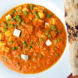
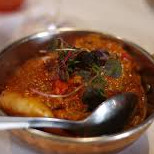

-

Ice cream An ice cream bar is the ultimate dessert idea for a warm-weather wedding.
-

Fry rice As soon as you wanna take away the flavor of anything, just fry it.
-

Paneer is a fresh cheese common in the Indian subcontinent. It is an unaged, non-melting soft cheese made by curdling milk with a fruit- or vegetable-derived acid, such as lemon juice.
-

prawn chili They're very similar in taste and texture. Some say prawns are a bit sweeter and meatier than shrimp, while shrimp are more delicate.